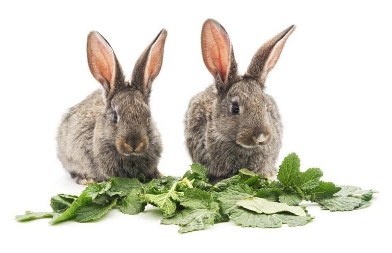

Alimentación

El conejo es un animal estrictamente herbívoro, lo que significa que su dieta se compone sólo de alimentos de origen vegetal: forrajes, cereales, verduras y frutas.
La dieta base de los conejos se compone de una mezcla de heno, forraje verde y pienso a diario que se debe racionar para evitar indigestiones y un engrasamiento excesivo. Además deben tener agua a libre disposición.
Lo más importante a tener en cuenta en su dieta es que los conejos están muy adaptados a una dieta pobre en energía y alta en fibra, que se compone básicamente de hierba. La alimentación incorrecta es la principal causa de enfermedades en el conejo.
El pan seco se da a menudo a los conejos con la creencia de que desgasta los dientes. El desgaste que provoca es escaso ya que se reblandece rápidamente con la saliva y tiene el inconveniente de aportar un exceso de carbohidratos que pueden provocar alteraciones de la flora intestinal.
DIETA EQUILIBRADA
Básicamente la dieta del conejo debe incluir HENO, siempre disponible durante todo el día puesto que tiene la fibra esencial para el correcto funcionamiento de su aparato digestivo durante todo el día puesto que tiene la fibra esencial para el correcto funcionamiento de su aparato digestivo. El heno es hierba segada cuando aún está verde y después es desecada. Al estar verdes, el aporte nutritivo es mayor que el de la paja, que es hierba segada cuando ya está seca. El conejo necesita heno para su digestión.
El heno más adecuado es el de gramíneas, que se puede combinar con el de alfalfa. La alfalfa les gustas más, pero como única fuente de alimentación podría favorecer la formación de cálculos por su alto contenido en calcio. Deberemos colocarlo en la rejilla siempre en cantidad suficiente para que el animal tenga comida hasta el día siguiente.
El heno bien conservado debería oler a fresco, y nunca a rancio o a pasado, ni debería tener un aspecto negro-grisáceo o polvoriento en su interior.
TIPOS DE HENO
Cuanto más viejo sea más fibras contendrá. Los henos hechos de plantas jóvenes son más digestibles y tiene menos fibra. Heno hiperenergético: Contiene hierbas jóvenes y trébol de la primera siega. Este heno tiene un olor aromático y es de color verdoso. Son suaves y apetitosos para los conejos, pero son demasiado bajos en la fibra. Heno del segundo corte. Es adecuado para conejos enfermos o convalecientes. Heno hipoenergético. Es fibroso y demasiado viejo y/o le faltan las hierbas más nutritivas. Es de un color amarillento y de peor digestión para el animal. No se debe consumir heno recién cortado, ya que provoca cólicos.
PLANTAS, VERDURAS, HORTALIZAS Y FRUTAS
A partir de las 8 semanas se pueden introducir los vegetales y frutas en pequeñas cantidades, una a una y de forma progresiva. Observar si el animal tiene algún problema digestivo (diarrea, cacas blandas…) y en ese caso eliminar de la dieta el alimento que lo produce.
Los alimentos frescos como las plantas, verduras, hortalizas y las frutas no se mantienen frescos durante mucho tiempo, por lo que conviene conservarlos en el frigorífico. No obstante, nunca dar la verdura recién sacada del frigorífico, siempre a temperatura ambiente. Se recomiendan dar 2-3 veces por semana. El exceso de fruta (mayor del 5%) o de verduras ricas en agua como la lechuga y el tomate, pueden desencadenar procesos diarreicos.
Lo mejor es proporcionar los alimentos frescos en forma de ensaladas mezcladas para proporcionarle una variada elección y así no darle una cantidad excesiva de ninguno de ellos.
Es muy importante que todas las hierbas o plantas se laven cuidadosamente antes de dárselas a los conejos debido a que muchos frutos y plantas son tratados con pesticidas. Los alimentos administrados y no consumidos deberían eliminarse diariamente.
En épocas de calor estival es preferible dar los alimentos frescos temprano, por la mañana, cuando la temperatura es más fresca. De este modo las aprovechan más y las ingieren en mejor estado de conservación
- Plantas silvestres
Plantas que se pueden recoger en el campo: hojas de diente de león, zaragatona picuda, aquilea, artemisa, quenopodio, armuelle, alfalfa, trébol amarillo, ortigas tempranas.
Sólo deberemos recoger las plantas que conozcamos. Tener en cuenta que pueden ser vehículo de enfermedades infecciosas del conejo. En particular podemos darle:
Diente de León: esta planta crece salvaje por jardines y campo. Las hojas de diente de león son ricas en vitamina A, C, K, B2 (riboflavina) y calcio. Las hojas actúan como un diurético aumentando el flujo de orina. También contienen otras sustancias que estimulan la digestión. Mejor si se recolecta en los meses de septiembre a febrero con la flor aún de color amarillo. Es interesante saber que contiene Vitamina A en mayor proporción que en la zanahoria.
Borraja: es una planta de escaso valor calórico. Las principales vitaminas que aporta son la C y la pro-vitamina A, ambas de acción antioxidante con efectos beneficiosos. Elevado contenido en fibra.
Trébol: es muy nutritivo y, cuando se deseca, da lugar al mejor de los henos. El trébol es propenso al ataque de un hongo y por ello no debe almacenarse nunca en sitio húmedo.
NO MUY RECOMENDABLE es el trébol rojo porque produce gases y flatulencias. Administrar mezclado en pequeñas cantidades y no recoger antes de que salga la flor.
VENENOSAS: Cólquico, perejil bastardo, cicuta, belladona, hierba mora negra, laburno, texáceas.